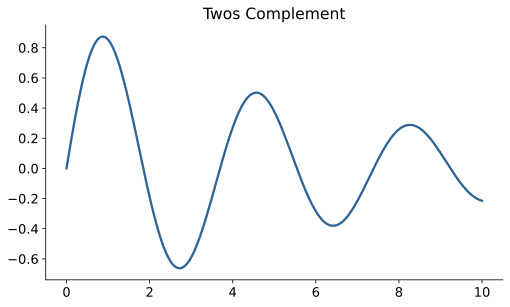
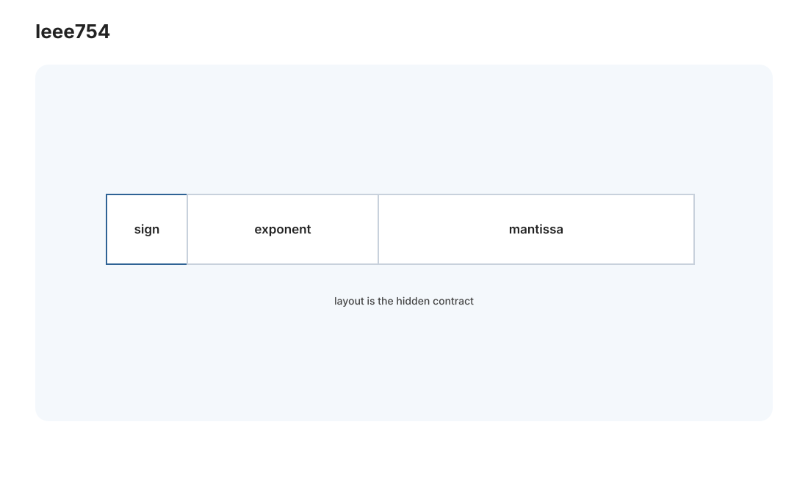
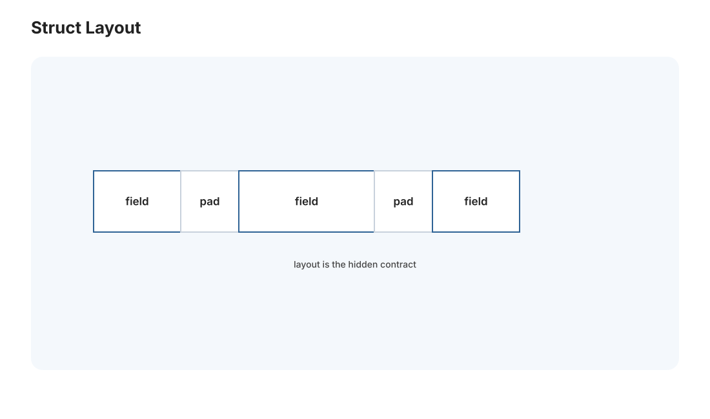
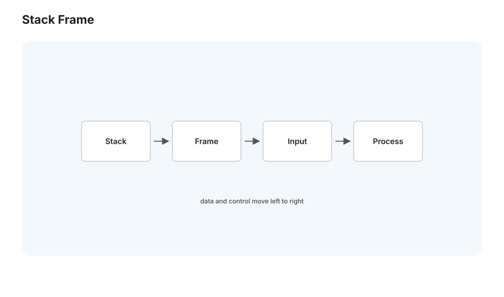

CSAPP I · 机器级表示
对标：CS:APP 第 2–3 章（CMU 15-213）/ 《深入理解计算机系统》 ｜ 前置：408 组成原理的概念框架 系统线的第一课，也是 408「组成原理」的真身。408 让你背 CPU 有哪些部件，CSAPP 让你看见一行 C 代码变成机器眼里的什么。核心心法一句话：程序员的抽象（变量、类型、函数）在机器层全是字节与地址——理解这层"翻译"，段错误、溢出、性能诡异全部不再神秘。
1. 信息即比特：数的表示与它的陷阱


机器只有 0/1，一切类型都是对字节的解释约定。
整数：无符号是直接二进制；有符号用补码（two's complement）——最高位权重取负 \(-2^{w-1}\)。补码的好处是加法器不用区分正负（\(a-b = a + (\sim b + 1)\)），硬件极简。陷阱：
- 溢出回绕：int 加法溢出是未定义行为（C 里），无符号则模 \(2^w\) 回绕。经典 bug：for (unsigned i = n; i >= 0; i--) 永不终止（无符号永 \(\ge 0\)）。
- 有符号/无符号混用：sizeof 返回无符号，if (a - b < 0) 当 a,b 无符号时永假——大量安全漏洞源于此（长度检查被绕过，🔗 sec-01）。
浮点（IEEE 754）：\((-1)^s\times 1.M\times 2^{E-\text{bias}}\)——符号 + 尾数 + 阶码。必须建立的直觉：浮点是对数刻度（大数间隙大），故 0.1 + 0.2 != 0.3、大数加小数会吞掉小数、比较浮点要用容差。特殊值 NaN/Inf 传播。"浮点不是实数、是实数的有损网格"——数值计算（🔗 数学站 num 线）的一切误差从这里生根。
2. C 与内存：指针、数组、结构体的真相

C 是"带类型的汇编"——它的每个抽象都能翻译成地址算术：
- 指针 = 地址 + 类型（类型决定 p+1 走多少字节、解引用读几字节）。
- 数组 = 连续内存 + 无边界检查：a[i] 就是 *(a+i)——越界不报错，直接读写邻居，缓冲区溢出（sec-01）的物理根源。
- 结构体 = 带对齐的字节块：成员按对齐规则排布（int 落在 4 的倍数地址），故结构体有填充空洞；调整成员顺序能省内存（把大类型放前面）。union 则是同一块字节的多种解释。
读法：C 里没有魔法，只有"这块字节怎么解释、走多远"。段错误 = 解引用了不该碰的地址；诡异数据 = 类型解释错了字节。学会用 gdb 看内存 + sizeof/offsetof 算布局，C 就透明了。
3. 汇编：控制流与函数调用的机器实现

高级语言的 if/for/函数 在机器层只有跳转和约定。看 x86-64（AT&T 语法）关键映射：
- 条件/循环 → 比较设置条件码（ZF/SF/OF/CF）+ 条件跳转 je/jl/jg。for 循环 = 初始化 + 条件跳转回边。
- 函数调用 → call 压返回地址 + 跳转；调用约定规定参数走哪些寄存器（rdi,rsi,rdx,...）、返回值在 rax、哪些寄存器调用者/被调用者保存。
- 栈帧 → 每次调用在栈上分配局部变量 + 保存现场；rsp/rbp 管理。递归就是栈帧的叠放，栈溢出 = 递归太深帧堆爆。
为什么要看汇编：① 理解性能（编译器做了什么优化、有没有向量化，🔗 perf 线）；② 理解安全（返回地址在栈上 ⇒ 溢出能劫持控制流，栈溢出攻击 sec-01）；③ 调试优化过的代码。你不用会写汇编，但要会读——它是"代码真正在做什么"的最终答案。
4. 从 C 到可执行：编译四步概览
gcc hello.c 背后：预处理（展开宏/头文件）→ 编译（C → 汇编）→ 汇编（汇编 → 机器码目标文件 .o）→ 链接（多个 .o + 库 → 可执行）。本页管前三步的"表示"，链接是 csapp-03 的主题。理解这条流水线，你才知道"undefined reference"（链接期）和"segfault"（运行期）是完全不同阶段的错误——报错定位能力就来自看清这条链。
5. 练习与要点
例 1（补码手算陷阱） 8 位补码：-128 的相反数是多少？答：还是 -128（\(+128\) 溢出）——abs(INT_MIN) 是真实存在的 UB 坑。一道题记住"补码不对称"。
例 2（结构体瘦身） struct {char a; int b; char c;} 在 4 字节对齐下占 12 字节（填充）；重排成 {int b; char a; char c;} 占 8 字节。手算两种布局的 sizeof，理解"字段顺序影响内存"这个真实的性能/内存优化点。
例 3（读一段汇编） 把一个带 if 的三行 C 函数 gcc -S -O0 出汇编，对照条件码与跳转——"高级控制流 = 比较 + 跳转"亲眼看一次。这是 [实验 L01 缓存实验] 之前最好的热身。\(\blacksquare\)
▶ 关联实验：本页无独立 lab，但它是 [L01 缓存分块]、[L03 malloc]、[L02 shell] 三个 C 实验的地基——先把"C 即字节"这层吃透，那三个实验才不会卡在指针上。
下一页：CSAPP II——存储层级与缓存：为什么同一个算法，换个循环顺序快 10 倍。